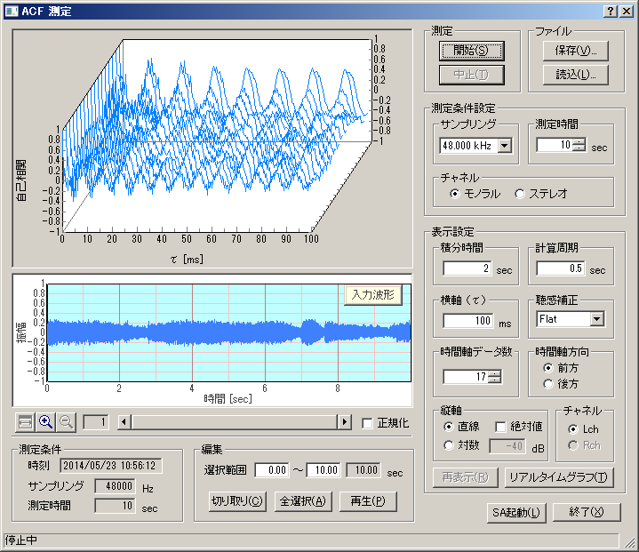

DSSF3 > RA > 操作マニュアル > RAの機能を利用する
ACF測定、環境騒音測定を利用した音源の録音
DAT等の録音機器が利用できない場合でも、リアルタイムアナライザ（以下、RAと表記）があればパソコンに直接音源を録音することができます。
RAのACF測定に付随する録音機能について説明します。自動録音は、1～30秒まで指定可能で、記録した音源を保存すると、記録日時、測定時の設定条件、分析結果、音響信号などが共通の測定用データベースに記録されます。
RAでACF測定を行う場合、演算に時間のかかる高分解度な測定では、正確にデータを取り込むことが要求されます。まず、計算量が少ない設定で、全てのデータを取り込み、精密な測定は後で処理することが可能です。録音された音源は、[再生]ボタンをクリックして聴くことができ、さらにオシロスコープやFFTアナライザで再分析することも可能です。

取り込んだデータを保存する際、[Waveファイル]ボタンを押して、保存先やファイル名を指定し、WAVEファイル形式で出力することも可能です。保存したWaveファイルは、Windows Media Playerなどで再生したり、編集ソフトに読み込ませて波形の編集や加工を行うことができます。
WAVEファイルを直接扱える機能を応用すると、過去のデータも測定時の状況そのままに測定分析が可能です。音響信号の劣化がなく、リアルタイムに測定するのと同じ測定結果が得られることは、様々な応用を可能にします。
DSSF3 > RA > 操作マニュアル > RAの機能を利用する